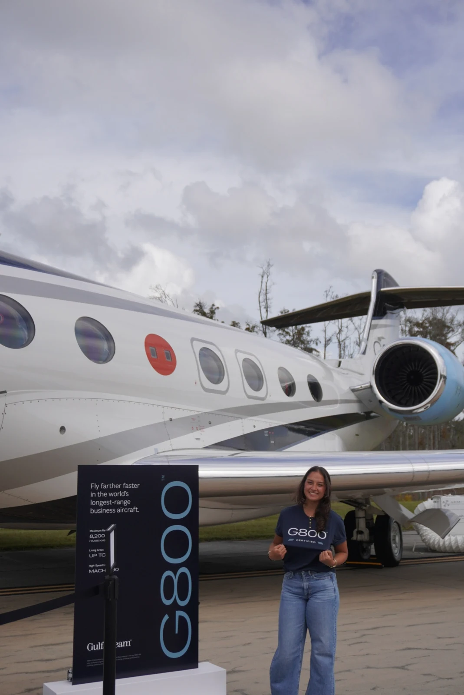
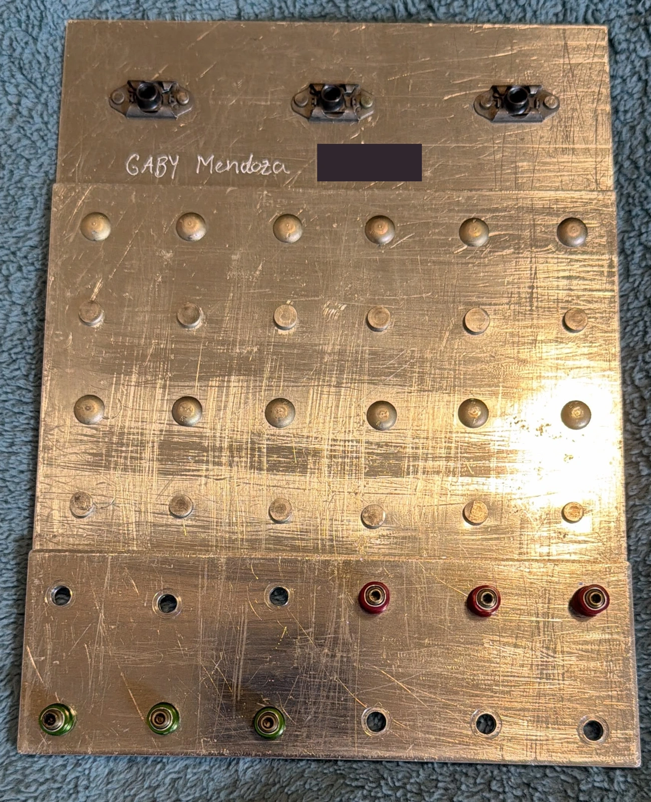

I completed three Operations Engineering co-op rotations at Gulfstream Aerospace, gaining experience across different stages of aircraft production. My rotations included Wing Box Assembly, final-line production testing, and aircraft completions. Each rotation gave me a different perspective on how engineering supports an aircraft as it moves from structural manufacturing through systems validation and final delivery.
All three rotations were within the larger aircraft manufacturing and production environment.

Gulfstream aircraft event
01
Wing Box Assembly • Process Improvement • CATIA • Shop-Floor Support
Rotation 1 — Wing Box Operations Engineering
I supported the Wing Box Assembly production environment, working with mechanics and production teams to investigate recurring assembly issues and turn production-floor observations into practical manufacturing improvements.
Automated drilling process improvement
~2 labor hourssaved per wing set
Approximately $7,500 in estimated annual savings
Both results came from updating supplier requirements to better support an automated drilling process.
10+CATIA shop aids & visual tools
Automated drilling process improvement
Updated supplier requirements to better support an automated drilling process by incorporating additional pilot-hole needs. The improvement reduced manual work by approximately 2 labor hours per wing set and produced estimated annual savings of about $7,500.
Accelerating recurring discrepancy resolution
Wrote simplified Standard Rework Orders (SROs) for recurring discrepancies so repeated discrepancy items could move through an established repair process more efficiently, rather than requiring the same full engineering review each time.
Unrequested demand investigation
Analyzed unrequested component demand to identify repeatedly requested parts outside of planned demand, excluding common fasteners. I then worked directly with mechanics on the production floor to understand the causes behind repeated requests and identify assembly or manufacturability challenges.
CATIA shop aids
Created more than 10 CATIA shop aids and visual tools based on issues identified directly on the production floor. These manufacturing references made difficult assembly steps easier to understand, helped reduce repeated errors, and gave mechanics clearer references during the wing build.
Structured manufacturing training
Completed a structured hands-on class during my Gulfstream co-op experience to build familiarity with mechanic workflows, aircraft assembly practices, and shop tools. The training included practical work such as riveting, drilling, and following instruction sets similar to those used in aircraft production.

Hands-on manufacturing training board completed during Gulfstream training, including drilling and riveting practice.
02
Production Testing • Troubleshooting • RF • Test Development
Rotation 2 — Final Line / Test Station Operations Engineering
My second rotation focused on final-line production testing, where aircraft systems were validated before the aircraft progressed toward flight testing.
Working alongside test technicians
Spent significant time on the production floor with test technicians, running aircraft test specifications, observing system behavior, and participating in troubleshooting when results did not match expectations. Gained exposure to aircraft systems, test procedures, troubleshooting, production test flow, and stock-sweep / final-test activities.
ELT activation investigation
Investigated unintended activation of a 406 MHz Emergency Locator Transmitter (ELT). The work began with evaluating possible electromagnetic-interference mitigation concepts and expanded into researching an RF-based alerting approach using RTL-SDR technology—a software-defined radio receiver—to help identify when the ELT had activated.
Hydraulic / Brake Control Valve test rig
Investigated vibration in a hydraulic line near the brake control valve. It was unclear whether the vibration was driven by the valve itself or by the hydraulic-line support configuration. Because the vendor test setup did not fully represent the aircraft installation, I designed an adjustable test rig that better represented the aircraft support geometry and allowed different support conditions to be evaluated.
03
Build Coordination • Production Support • Test Development • Cross-Functional Engineering
Rotation 3 — Completions Operations Engineering
My third rotation focused on aircraft completions, where I supported a specific aircraft and build team as the interior and remaining systems progressed toward conformity and delivery.
Supporting the aircraft build team
Tracked build progress, engineering changes, part shortages, and production dependencies to support conformity and delivery timing. Coordinated across production, design, liaison, certification, and supporting teams.
Installation sequence & readiness
Helped adjust the build sequence as parts and designs became available, avoiding unnecessary remove-and-reinstall work. Communicated schedule impacts and supported alternatives when parts or engineering were not available on schedule.
Furniture electrical-test development
Contributed to automated electrical continuity-test concepts using DIT-MCO equipment and collaborated with R&D on furniture test-bench concepts. As part of this electrical-test development work, I evaluated whether a common test approach could be reused across multiple configurable furniture arrangements rather than requiring a separate test setup for each configuration.